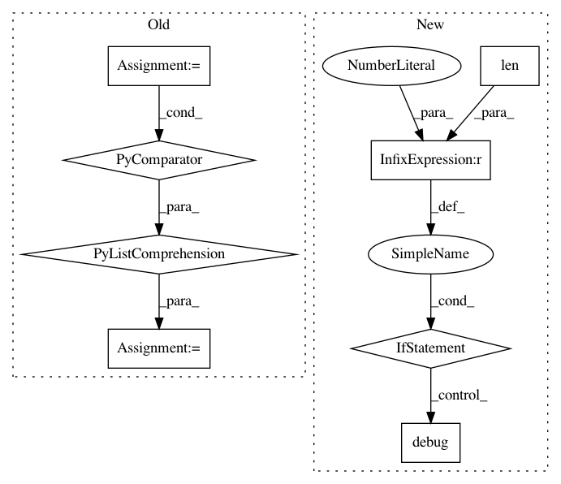

bcf38b02cc7209d1baccd1302b5224f5faf2f00a,plugins/train/model/_base.py,_Inference,_make_inference_model,#_Inference#Any#,1454
Before Change
logger.debug("Adding model inputs %s: %s", self._input_names, self._inputs)
model = layer(self._inputs)
else:
layer_inputs = [compiled_layers[inp] for inp in inbound]
logger.debug("Compiling layer "%s": layer inputs: %s", name, layer_inputs)
model = layer(layer_inputs)
compiled_layers[name] = model
retval = KerasModel(self._inputs, model, name="{}_inference".format(saved_model.name))
After Change
layer_inputs = []
for inp in inbound:
inbound_layer = compiled_layers[inp[0]]
if isinstance(inbound_layer, list) and len(inbound_layer) > 1:
// Multi output inputs
inbound_output_idx = inp[1]
logger.debug("Selecting output index %s from multi output inbound "
"layer: %s", inbound_output_idx, inbound_layer)
layer_inputs.append(inbound_layer[inbound_output_idx])
else:
layer_inputs.append(inbound_layer)
logger.debug("Compiling layer "%s": layer inputs: %s", layer.name, layer_inputs)
model = layer(layer_inputs)
compiled_layers[layer.name] = model
retval = KerasModel(model_inputs, model, name="{}_inference".format(saved_model.name))
In pattern: SUPERPATTERN
Frequency: 3
Non-data size: 8
Instances
Project Name: deepfakes/faceswap
Commit Name: bcf38b02cc7209d1baccd1302b5224f5faf2f00a
Time: 2021-01-31
Author: 36920800+torzdf@users.noreply.github.com
File Name: plugins/train/model/_base.py
Class Name: _Inference
Method Name: _make_inference_model
Project Name: senarvi/theanolm
Commit Name: b73fc0c21ea55c7d3357fbf633944e1e67db8bdf
Time: 2016-07-31
Author: seppo.git@marjaniemi.com
File Name: theanolm/scoring/latticedecoder.py
Class Name: LatticeDecoder
Method Name: decode
Project Name: automl/SMAC3
Commit Name: 13dc44654ba763bde1aeb38d0d4f40787a2f4456
Time: 2016-03-02
Author: eggenspk@informatik.uni-freiburg.de
File Name: smac/runhistory/runhistory2epm.py
Class Name: RunHistory2EPM
Method Name: transform